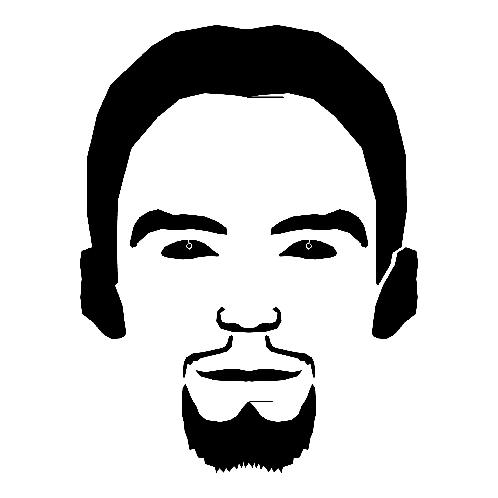

Markus Kristian
Korkeakouluopiskelija
Sähkö- ja automaatioasentaja
Korkeakoulujen yhteishaku on käynnissä joka tarkoittaa, että nyt on hyvä aika suunnitella tulevaisuutta niiltä osin kuin se on mahdollista.
Keväällä olen kahden kymmenen ops:n päässä valmistumisesta. Kiitos kouluttajat, opettajat, päälliköt ja opiskelukaverit!
Labrakokeista paljastuu, että veriarvoni ovat lähestulkoon täydelliset! Omassa päässäni päätän 4 vuotta kestäneen projektin jonka aikana olen päässyt eroon tupakoinnista, ylipainosta sekä korkeasta verenpaineesta.
Kolmas kesä Helsingissä! 1000 km.
Vuoden aikana ja tähän mennessä Hyriassa iltaopiskelijat olivat opiskelleet Ahorannan Sähkötekniikan kannesta kanteen, jonka lisäksi asennettiin ja johdotettiin:
Lisäksi kaikkiin jännitteettömät sekä useimpiin jännitteelliset käyttöönottotarkastukset pöytäkirjoineen (Fluke 1662/Amprobe Telaris Pro).
Syksyllä kävi jälleen tuuri. Pääsin mukaan sähkö- ja automaatioalan pt:n opiskeluryhmään. Tätä tuli kestämään 2 vuotta.
Toinen kesä Helsingissä ja kaupunkifillareilla 1100 km.
Keväällä olin takaisin Hyriassa jossa istuin 8 viikon uravalmennuksen.
Vapaa-aikaa oli joten ilmoittauduin lukioon.
Ensimmäinen kesä Helsingissä ja kaupunkifillareilla.
Tammikuussa päätin kokkiopinnot. Kiitos Juhani, Atte ja muut kouluttajat sekä mahtava opiskeluryhmä!
Keväällä kävi tuuri ja pääsin Aten valmennettavaksi Hyriaan suorittamaan HoReCa-tutkintoa!
CS:GO 2000h. Matchmaking Lem.